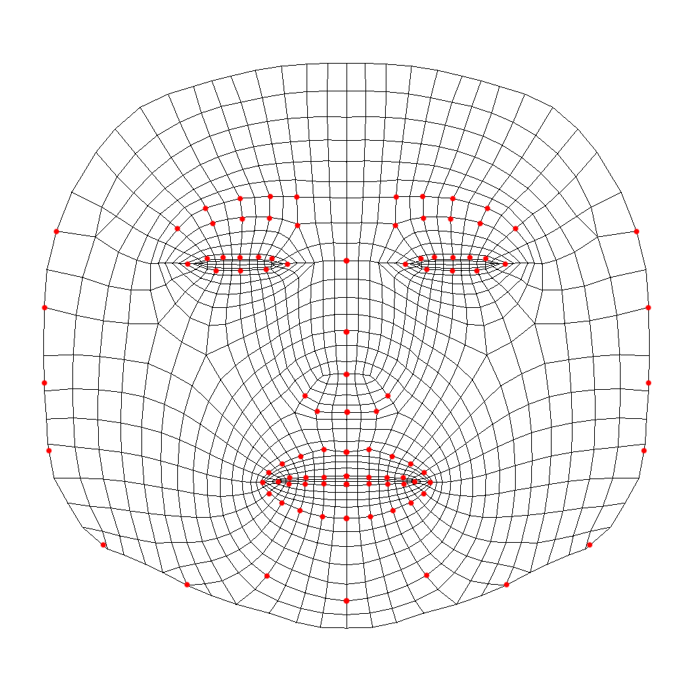

WebAR Foundation is super developer friendly. Check out this video to see how a AR web app is built in 3 minutes from a scratch Unity Project!
If you want to build a Face Mask effect, one easiest way is to download this base image. Then open a photo editor (e.g. photoshop), create two layers, with this image below. Now draw on the top layer referencing the base image. When you are done, hide the bottom layer and export it as png (with transparency). 
2. If you are building Virtual tryon effect, you most likely want to have the "Human Face" hiding 3D objects hide. This technique is called occlusion. To do that, assign a occluder materials to the `MeshRenderer` on the FaceTracker. Refer to the "TryOn" sample project for reference if needed.
WebAR Foundation comes with a handy debugger that can be run in Editor, so you don't need to build it everytime you make changes. Please refer to: Face Tracking Debugger